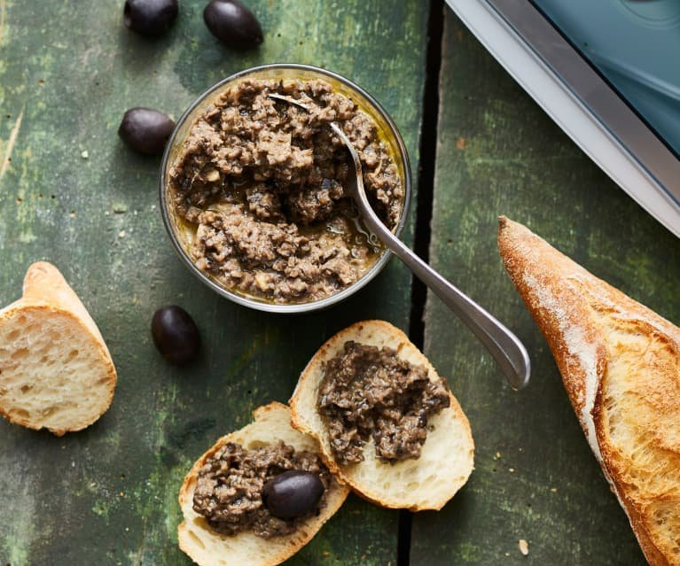

Tapenade de Marseille
Ingredients
6×
- 1 gousse d'ail
- 150 g d'olives noires dénoyautées
- 25 g de filets d'anchois
- 2 c. à s. de jus de citron
- 2 c. à c. de thym frais
- 2 pincées de poivre
- 30 g d'huile d'olive

Préparation
Étape 1
Hacher 1 gousse d'ail 3 sec/vitesse 5.
Étape 2
Ajouter 150 g d'olives noires dénoyautées, 25 g de filets d'anchois, 2 c. à s. de jus de citron, 2 c. à c. de thym frais et 2 pincées de poivre. Mixer 30 sec/vitesse 4, racler, puis 15 sec/vitesse 4.
Étape 3
Ajouter 30 g d'huile d'olive et mixer 1 min/vitesse 4. Garder au frais.
Conseils
- Ne pas dépasser la vitesse 4, sinon la pâte colle aux parois.